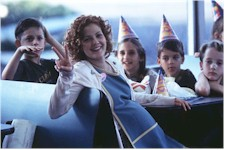
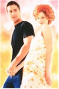
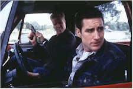

Contents | Features | Reviews | News | Archives | Store |
 |
|
| Movie Credits | Buy It! |
Home Fries
Review by Gregory Avery
Posted 25 November 1998
| Directed by Dean Parisot. Starring
Drew Barrymore, Luke Wilson, Jake Busey, Written by Vince Gilligan. |
In Home Fries, Drew Barrymore plays Sally, a young woman who works a thankless job at the drive-up window of a burger joint in a small Texas town, and who is also eight months pregnant with a child by a married man to whom she has just given the boot. (He was not only lying to her, but he was also lying to his wife, which, in her mind, just isn't right.) Trudging back and forth to work on-foot (Barrymore gets the laden, duck-like walk which many pregnant women must suffer with down just right) from home, where she lives with her mother (Shelley Duvall), Sally does her work with as much good humor as she can muster, working the drive-up window specifically so that the customers who are ordering food won't see her enormous form, and the other workers and the manager respond to her with surprising protectiveness.
The married man's two grown stepsons, Angus (Jake Busey) and Dorian (Luke Wilson), who fly Cobra helicopters at the nearby Army base, pull a prank on him designed to merely scare the crap out of him. But the prank goes awry, and the two sons, concerned with covering their traces, think that Sally may know something about what they've done. With military efficiency, they decide to infiltrate the burger restaurant to find out how much she knows. The chore falls to Dorian to, grudgingly, get a job there, and ingratiate himself to Sally. They both end up falling, gently and sweetly, in love with each other, without Sally knowing what Dorian's relation is to the man who fathered her child. Meanwhile, Dorian, too, becomes increasingly protective of Sally.
If the opening scenes -- sleekly photographed close-ups of objects at night, a helicopter's searchlight swimming over open ground -- look like "The X Files", that's because the screenplay was written by Vince Gilligan, a writer for the show. Dean Parisot, who has previously worked on the TV show "Northern Exposure", directed. They bring a considered sense of observation and progression to the material -- the scenes at the burger joint look like they were created by someone who has at one point paid their dues working at a burger joint -- along with an amount of playfulness, steering the material in such unusual directions as if to see what'll happen if they do, and to keep the audience's expectations slightly akimbo. The picture is not a complete success, but when it works, it achieves the rare feat of becoming a comedy of absurdity, with a daft kind of logic all its own.
Drew Barrymore has lost some of the "babyfat" look to her face but still has a beguiling appeal -- she looks like the girl who broke all the boys' hearts in class, and they all liked it. She doesn't entirely seem to fit in this particular role -- it's hard to believe that someone who looks like her would be slaving away at a menial job, and Barrymore's attempts to give Sally a rolling, lackadaisical speaking cadence sound affected -- but she works hard, and she does some very nice things in the film. When she kisses Wilson's Dorian for the first time, she holds-in her lower lip after they part, as if savoring the experience for just a few moments longer.
Luke Wilson has studious, vermicular features and eyebrows that seem to have been pinched together a bit. Both his and Jake Busey's characters come across as boys who were brought up to be respectable -- as well as respectful -- young men, to say "please" and "thank you", and to justify the fact that they were "brought up right". At one point in the film, Dorian overhears a customer haranguing Sally at the drive-up window, and he goes outside and gets into the man's car to tell him, quietly but assertively, that Sally doesn't deserve that type of treatment. (It somehow makes sense that the customer should have Los Del Rios' "Macarena" playing in his car.) Yet both the brothers have a streak of feeling trying to get out of them. Wilson brings an easy charm and earnestness to his role, but he also performs with great precision. When Dorian agrees to help Sally at her Lamaze class, he handles her as they go through the various, somewhat cumbersome, exercises with delicacy and a certain chivalrousness, all the while trying not to let his embarrassment, at being in such close proximity to a pretty and fulsome woman, show; you feel he doesn't want to make her embarrassed by seeing that he's embarrassed. Which is what makes the eventual romance that occurs between them quite affecting.
The prank that gets the whole magilla started in the first place may have been partly Angus and Dorian's idea, but not entirely. It turns out that these two have gone, and will end up going to, great lengths just to make their mother happy. The scornful wife and mother is played by Catharine O'Hara, whose characterization skillfully alternates between moments of emotional duress -- or, rather, whatever type of duress would most suit her for the moment -- and sudden, sharp little instances of revelation that clue us in as to what's actually going on inside her head -- such as how she may have wanted to get rid of her philandering husband more than we, possibly, even want to know.
O'Hara still has the amazing ability to pick up on and communicate to the audience the particular slant that will make us fully comprehend whatever character she's playing. Unfortunately, she only works as a performer when she darn well feels like it, making her appearances almost as few and far between as Paul Scofield's. Things that O'Hara has done over the last 15 years, however, keep coming back to mind long after miles and miles of film by other people has been forgotten: an "SCTV" sketch where she played Katharine Hepburn, opposite three other performers playing Richard Burton, Peter O'Toole and Richard Harris ("Oh, I just love the sound of your voices, together..."), in a movie entitled The Man Who Would Be Pope and King; a pernicious woman who deliberately makes Griffin Dunne forget a phone number he's trying to dial in After Hours; and a wonderful appearance -- which is all of one scene -- as a resentful, boozed-up woman who pours out her heart, and then some, to a friend in Ron Howard's The Paper. Home Fries -- at least, the way it's turned out -- doesn't quite seem to know what to do with her character at the end, but the closing sequences in general have a trammeled-up quality to them, as if the filmmakers were uncertain what to do with the movie as a whole in the end. It does have several things worth having a look at, but any excuse to see Catharine O'Hara, one of the most gifted comic and satiric performers of the last 20 years, is reason enough.
Be sure to read the coverage of the film at the Toronto International Film Festival ...
Contents | Features | Reviews | News | Archives | Store
Copyright © 1999 by Nitrate Productions, Inc. All Rights Reserved.